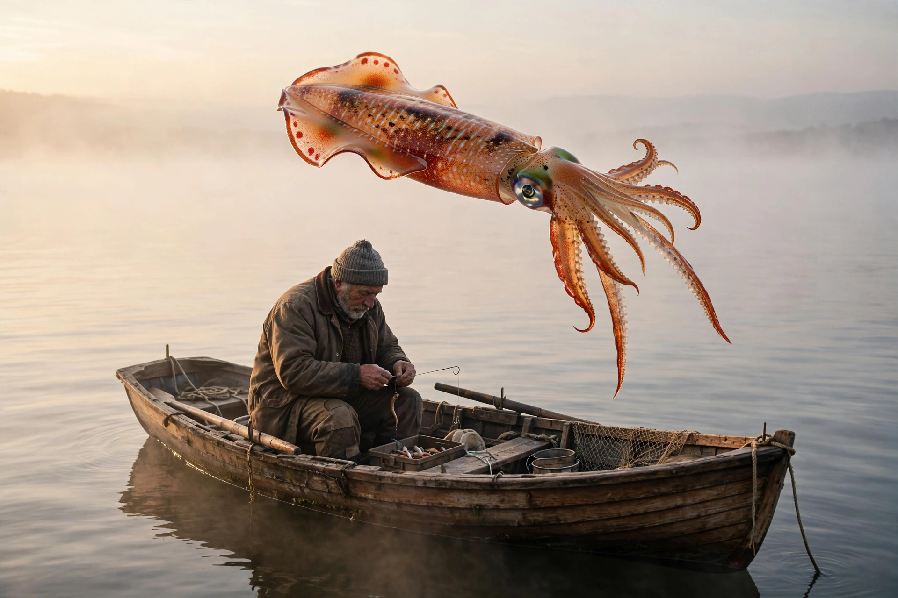

Loligo — a genus of slender inshore squid: a torpedo-shaped mantle, fins that meet at the tail end, eight arms and two long feeding tentacles. The classic calamari squid of coasts all over the world; Loligo vulgaris, the European squid, is the species the whole genus is named from.
Stress the middle — lo-LYE-go. Six letters that start like a laugh and end like a command. It is not laughing at you: the Romans named this animal two thousand years before the internet taught LOL to mean anything, and the resemblance is pure accident — a modern joke wearing an ancient word.
Straight from Latin loligo (also spelled lolligo) — a squid, a cuttlefish — the word Pliny the Elder used in his Natural History. Science simply kept the Roman name: Lamarck raised it to a genus in 1798.
Three syllables, three beats of a squid jetting backwards — tap each part:
Lo- launches it, -ly- stresses it, -go sends it: a word shaped like the animal's escape.
One animal, two careers, and a name that keeps outliving its filing system:
An inshore squid built like a fountain pen: long mantle, fins frilling the tail, skin alive with chromatophores that repaint it in waves of amber and rust. It hovers, darts, jets backwards, and signs its exit in ink.
Dinner and data. Most of the world's calamari is loligo and its close kin — and the longfin squid Loligo pealeii (now filed as Doryteuthis pealeii) handed neuroscience the giant axon, a nerve fiber thick enough to wire up by hand.
Taxonomists keep moving species out — to Doryteuthis, to Uroteuthis — and the genus shrinks around its founding classics. The name doesn't care. Loligo stays on the menus, in the textbooks, and in a Roman's notebook from 77 AD.
Pliny the Elder's Natural History catalogs the loligo — and swears there is a kind, the flying loligo, that leaps clear out of the sea. He was right: some squid really do glide above the waves. Rome had the word, and the strangest fact about the animal, nineteen centuries early.
As the Linnaean order sweeps through zoology, Lamarck raises Loligo from a Roman common noun to a formal genus — one of the oldest animal names in continuous scientific service, carried over almost unchanged from the language of fishermen and fish markets.
Hodgkin and Huxley thread electrodes into the giant axon of a loligo and publish the mathematics of the nerve impulse — how every signal in every animal brain, including yours reading this, actually fires. The work wins the Nobel Prize in 1963. A squid's wiring diagram became neuroscience's founding document.
The genus is smaller than it was — the reshuffle moved many species out — but loligo is the rare scientific name that escaped into ordinary life: on menus, in bait shops, and tonight, on a Blossom board, spelled out of seven letters over a sea of -ing words.
1. A loligo is…
2. The word loligo comes from…
3. Loligo's great gift to science was…
4. Pliny's "flying" loligo was said to…
You mine Blossom for prompt seeds — here's this one, ready to plant:

Tonight's render — spot the quiet impossibility.